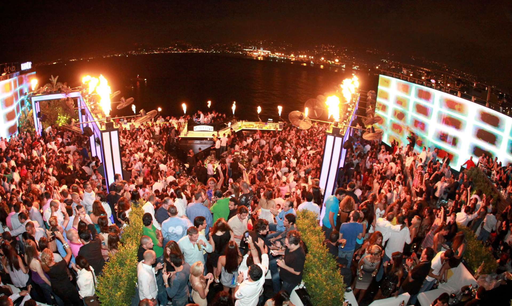
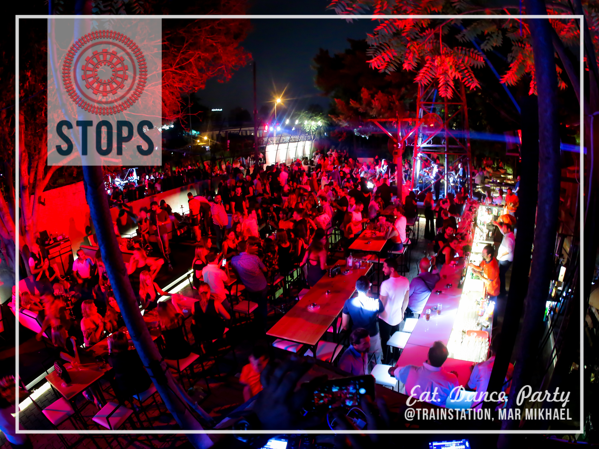
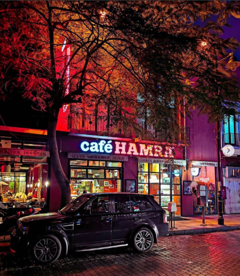
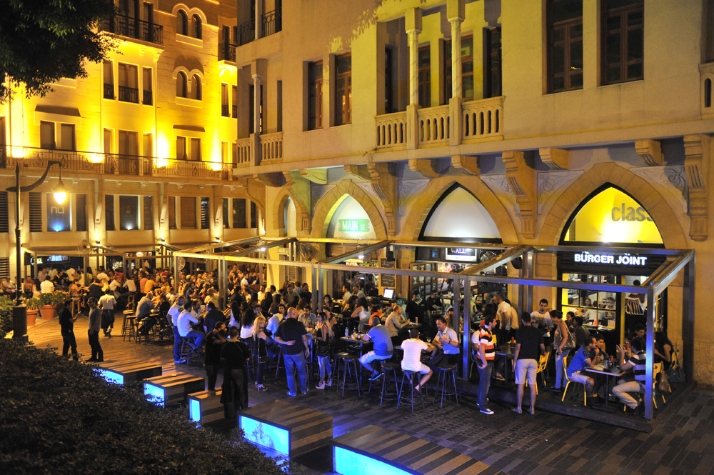
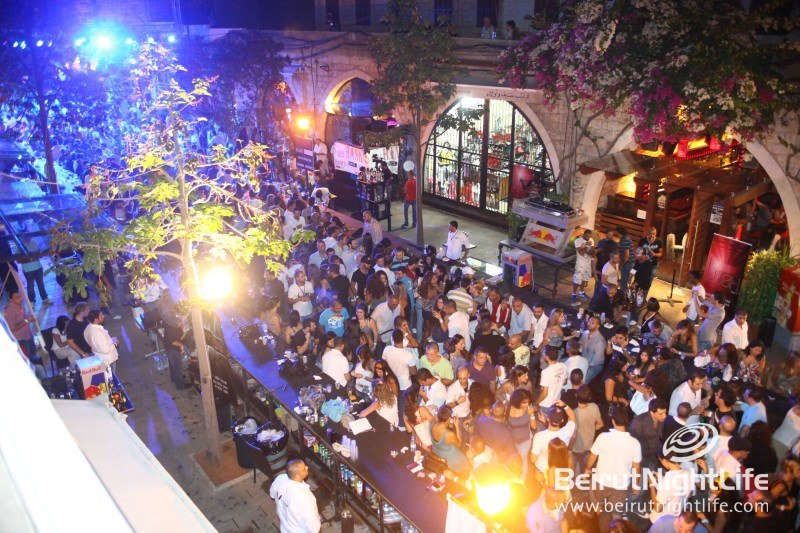
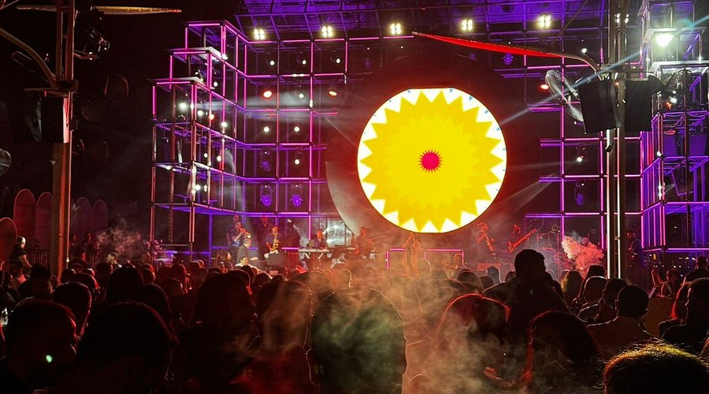

Ministry of Tourism Lebanon
DISCOVER LEBANON
Lebanon has long been the entertainment hub of the Arab world. In the 1960s and 70s, Beirut's nightclubs hosted the greatest Arab singers of the era. Fairuz, Sabah, and Warda al-Jazairia performed on stages that drew visitors from Cairo to Baghdad. That tradition of world class live entertainment never fully disappeared, even through the civil war years.
Today, Beirut's nightlife spans everything from underground electronic music clubs to rooftop bars overlooking the sea, from jazz venues tucked into Ottoman era buildings to open air summer festivals with international headliners. The energy of the city after dark, chaotic, generous, and crackling with life, is unlike anything else in the region.
And it is not only Beirut. Mountain towns like Byblos, Jounieh, and Batroun have thriving summer entertainment scenes of their own, and the country's festival calendar runs from March through October with concerts, theatre, and cultural events at some of the most extraordinary venues on Earth.


Beirut's most beloved nightlife strip, a stretch of Ottoman era buildings whose ground floors house bars, galleries, restaurants, and music venues that spill onto the street until dawn. The atmosphere is unpretentious, creative, and entirely Lebanese in character.

Hamra's nightlife is quieter and more eclectic than Mar Mikhael. Bookshop cafés, jazz bars, late night shawarma spots, and student hangouts around the AUB campus fill the area. The street that once hosted Beirut's intellectual bohemia still carries that thoughtful, unhurried energy after dark.

Beirut's Downtown comes alive in summer with rooftop bars, waterfront restaurants, and open air venues overlooking the sea. The juxtaposition of restored Ottoman architecture, Roman ruins, and a buzzing modern nightlife scene gives it an atmosphere unlike any other city center in the Middle East.

Jounieh at night is one of Lebanon's most spectacular sights, a ring of lights reflected in the bay, with the mountain rising behind and the cable car to Harissa still visible above. Its Corniche is lined with restaurants and beach clubs that stay lively well past midnight throughout the summer season.
Lebanon's entertainment offer extends far beyond clubs and concerts. It includes theatre, cinema, comedy, live Arabic music, and a café culture of extraordinary richness.
Theatre & Performing Arts — Beirut
Beirut has a thriving theatre scene around Hamra and Ashrafieh, with productions in Arabic, French, and English. Monot Theatre and the Beirut International Theatre Festival present Lebanese and international work year-round.
Live Arabic Music — Nationwide
Lebanon is home to some of the greatest voices in Arabic music, with live performances from classical Arabic maqam to contemporary Lebanese pop across Beirut and outdoor summer concerts nationwide.
Cinema & Film Culture — Beirut
Beirut's independent cinema culture includes the Beirut International Film Festival and art house screenings in Hamra and Ashrafieh, showcasing Lebanese and international productions.
Café Culture — All Cities
The Lebanese café is an institution: a place to debate, smoke arguileh, play backgammon, and watch the world go by. From historic Hamra cafés to specialty shops in Mar Mikhael, café culture defines Lebanese social and nocturnal life.
Beirut Art Week & Gallery Openings
The annual Beirut Art Week draws regional collectors and artists, with exhibitions and gallery openings concentrated in Gemmayzeh and Mar Mikhael. One of the most internationally connected events in Lebanon's cultural calendar.

Beirut's reputation as a nightlife destination is one of its most powerful international brand assets. It draws visitors who would not otherwise come to the Middle East and positions Lebanon as a cosmopolitan, open, and culturally vibrant country on the global tourism map.
Restaurants, bars, clubs, hotels, and entertainment venues collectively employ a significant portion of Beirut's workforce. The nighttime economy, spanning hospitality, music, events, and transport, is one of the city's most important economic sectors and a primary driver of tourism spending.
In Lebanon, going out is not merely leisure. It carries a cultural weight. Beirut's nightlife has persisted through civil war, economic collapse, and political crisis, and its continuation is widely understood as an act of collective resilience and a refusal to surrender public life to despair.
A rich nightlife and entertainment offer gives visitors a compelling reason to stay longer. Tourists who come to Lebanon for history or beaches often extend their trips because of the quality of the evening experience, the restaurants, the music, the festivals, the social energy of Beirut after dark.
Lebanon's entertainment economy supports a wide ecosystem of creative professionals, musicians, designers, chefs, event producers, and artists. Nightlife and entertainment tourism sustains this creative class, which in turn produces the cultural output that makes Lebanon a compelling destination in the first place.
For the millions of Lebanese living abroad, a summer return to Beirut is inseparable from its nightlife, the restaurants, the music, the late nights, the familiar chaos. Nightlife tourism is deeply embedded in the emotional economy of diaspora return, and the summer season it drives is the backbone of Lebanon's annual tourism numbers.
©2026 All Rights Reserved - Ministry of Tourism Lebanon